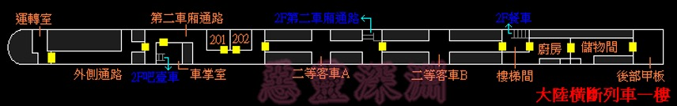
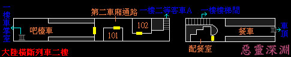
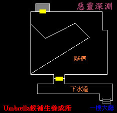
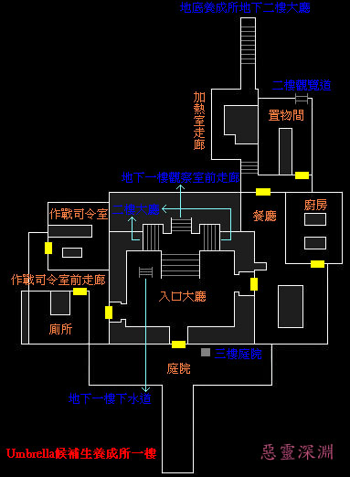
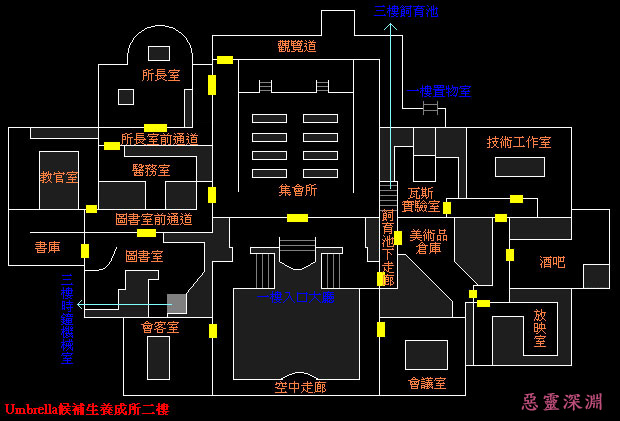
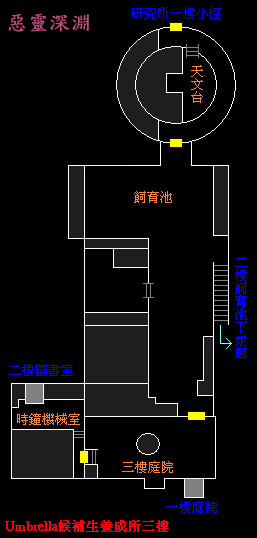
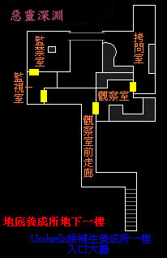
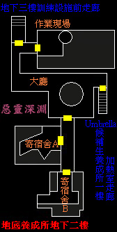
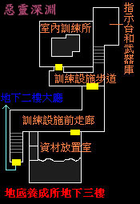
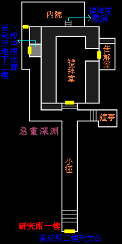

|
惡靈古堡０-----地圖攻略
|
|
惡靈古堡０-----地圖攻略
|
|
攻略中道具的取得以Easy模式為主，Easy模式可以取得的道具最多，越困難的模式可取得的道具越少，而敵人數 量則沒有差別。攻略中標天藍色的為重要道具，請務必一定要取得。
 一開始玩家的位置是在二等客車B，請直接往二等客車A。在二等客車A會碰上三隻僵屍襲擊，非得打倒他們才 能繼續進行，打倒後往第二車廂通路。 在第二車廂通路往外側通路的門前有一具屍體，屍體上可找到一把鑰匙，調查後發現是餐車的鑰匙， 鑰匙到手 後會初次碰到Billy。
回程的路上遇到Edward破窗而入，可憐的他已經奄奄一息了，在他斷氣之後可在他身上取得手槍子彈，同時也會 有兩隻僵屍犬一前一後跟隨著Edward跳進來。
在201房有打字機可以記錄，這裡可取得調查命令書、手槍子彈、綠色藥草、色帶。 202房有乘客的日記、手槍子彈、色帶、急救噴霧、空瓶子、左輪手槍、衝鋒槍子彈（以上兩種須在破關後的水 蛭獵人遊戲中取得才會出現）。
用剛取得的鑰匙打開通往樓梯間的門，Billy又出現了，可惜Rebecca不聽勸告，獨自一人上二樓去了。 樓梯間這裡有給管理責任者的指示書。
 二樓餐車上坐著一位先生，靠近後發現是人型水蛭，Rebecca可以不打直接下樓，或是攻擊到一定的程度 ，這兩 種情況Billy都會上來幫忙，後來兩人終於決定一起合作，Billy會給Rebecca手槍子彈，並且拿到遊戲手冊2。另外 在樓梯剛上來附近也有手槍子彈可拿。
此時玩家必須要選擇一個人爬上車頂，沒有必要兩個人一起上去，爬上車頂的人流程比較簡單而且安全，另一 個先在原地待命。 （地圖略）爬到車頂上後往前方移動，在最前方看到鬆脫的電源線，接上後會被水蛭攻擊而掉落到二樓的配餐 室，配餐室中有車掌室的鑰匙、綠色藥草、手槍子彈兩副、急救噴霧，往外的門無法打開， 暫時必須被困在這 裡了，利用這?堛漱p型升降梯把剛到手的車掌室鑰匙傳出去吧，這個升降梯和一樓廚房的升降梯是相通的。
被留下來的主角現在就要去取得傳出來的車掌室鑰匙，一樓樓梯間往廚房的自動門因為已經通電了所以可以通 行，拿到小型升降梯裡的車掌室鑰匙就可以離開，並且往車掌室前進。 打開車掌室的門後，在裡面可找到綠色、紅色藥草，車掌的筆記，櫥櫃裡面有車掌的公事包，牆上有地圖， 按 下牆上紅燈開關，出現往二樓吧檯車的樓梯。 吧檯車此時並有什麼特別的，直接往2F第二車廂通路。門前方的小餐車上有鑿冰器，一旁有綠色 藥草兩株、紅 色藥草，通往102房的路上被水蛭的卵堵住了，只有101房可以進去。
101房裡有獵槍、手槍子彈、急救噴霧、散彈、色帶，準備好了就可以回吧檯車準備和大蠍子對決（破關過且拿 到特殊鑰匙的可在這裡的衣櫃換裝）。
和大蠍子對決的時候要注意，一定要使用下段攻擊，他的身體和尾巴都是無效的攻擊部位，攻擊這些 地方會聽 到子彈被彈開了，而攻擊頭部最有效，而且還能阻止他繼續前進，多利用這點或許可以毫髮無傷的勝利。 擊倒大蠍子後請記得拿取掉落在樓梯附近的開蓋器。 快到一樓廚房將鑿冰器用小型升降梯傳送給另一個主角，另一位主角使用鑿冰器打開門後到廚房來會合吧。 兩位會合後用開蓋器打開廚房的蓋子，藉由這個通道爬到隔壁儲物間，在儲物間有兩隻僵屍犬，解決後發現附 近有金環、汽油、散彈、急救噴霧。
接著到後部甲板，這裡需要兩個人合作，先讓兩人分開行動，一個站到角落的開關前，一個站在放拋繩槍的前 方，在一位主角拉下開關後立刻換另一位主角拿取拋繩槍（取得勾繩槍使用說明書），如果失敗重來一次就好 。這裡還有一個有數字的面板，現在還用不到。
回程的時候注意，從儲物間回到廚房時，廚房的冰箱會有一隻僵屍襲擊，冰箱裡有空瓶子。
拿拋繩槍到一樓二等客車A，在樓梯前的那個角落有一個窗子，在窗子前面使用拋繩槍就可以到車頂（地圖略） ，由車頂可以下到二樓的102房，但是只能有一個人上去，上去的人只會遇到一隻僵屍和一些水蛭。
在102房裡有一隻僵屍、手槍子彈、小刀、珠寶盒，珠寶盒調查後拿到銀環，把金環、銀環、車掌的公事包組合 ，就可以打開公事包，裡面有藍色鑰匙卡，是用來打開一樓第二車廂通路往外側通路的門 ，拋繩槍目前用不到 了，就放在這吧。
出房門前外面水蛭的卵開始孵化，二樓走廊總算暢通了，走廊上出現一大堆小水蛭，攻擊力弱，用腳踩即可 消 滅他們，到一樓二等客車A前別忘了把樓梯前的綠色藥草帶走。 下樓後兩位主角再度會合，帶著藍色鑰匙卡去打開通往外側通路的門。 外側通路上有兩位士兵遭水蛭攻擊死亡，其中一位身上有衝鋒槍子彈（已於水蛭獵人遊戲中取得才會出現）， 進運轉室。
在運轉室裡兩人為了要將列車停止，（取得煞車操作手冊）必須派一個人到後部甲板去操作，至於派 誰由玩家 決定，不管派的是誰，都請務必先將前方桌上的電氣磁卡帶走，另外周圍還有兩副手槍子彈和綠色藥草 ，其中 一副手槍子彈在櫃子底下，較難發現。
往後部甲板的路上會遇到好幾隻僵屍，包含死去的Edward變成的，如果玩家派的是Rebecca就可以看到一段Rebecca 看到Edward啃食屍體難過的動畫，Billy則無。
到後部甲板請使用磁卡來操作面板，面板上會有數字，玩家的任務就是選擇十個數字（可重複），使這十個數 字相加等於面板上顯示的數字就算成功了，玩家每按一個數字，面板都會幫你加起來，讓你知道現在還有多少 差距。（這是一個簡單的機關，例如出現的數字是90，則只需連按10次9，相加即為90。如顯示為81，則可按8次 9加上一個6和一個3）
成功後會轉到運轉室另一個主角，同樣是要解除相同的機關，但是面板壞了一半，所以必須自己心算 。這時應 該可以看見運轉室另一副手槍子彈的位置。雙方面都成功後，主角會拉下運轉室的煞車，最後列車翻覆，兩人 被摔落在Umbrella候補生養成所地下一樓的隧道裡。
 在隧道裡散落著原本在列車裡的武器、彈藥和急救噴霧，但是不包括未經調配的藥草、色帶、汽油和空瓶。 先將附近的僵屍打倒，以後拿道具也比較方便。接著安全的通過下水道往一樓大廳。
 入口大廳有色帶、手槍子彈、衝鋒槍子彈（須在水蛭獵人中取得才會出現）、紅色綠色藥草可拿，補充完 後請 往餐廳走。 這裡有兩隻僵屍和兩副手槍子彈，繼續往置物間方向。 在置物間裡除了兩隻僵屍擋路，還有不少好東西，散彈槍、汽油、空瓶子、綠色藥草、黑之像，接著爬梯子 往 上到二樓觀覽道。
 觀覽道有三隻僵屍和三株綠色藥草，來這裡的目的是要把通往集會所反鎖的門打開，打開後進入集會所（也可 以直接從大廳的樓梯上來，但是這扇門沒打開以後會比較麻煩）。集會所中可取得色帶、手槍子彈、散彈、幹 部後補社員心得，講台上似乎有些玄機，但是現在還沒辦法解開，請出集會所到空中走廊。
空中走廊上有一尊石像，可以先把黑之像放在附近，接著請進會客室。 此處配置的東西有手槍子彈、給所員的通知、曲柄把手。建議曲柄把手最後拿，這項道具一拿起就會飛進一 堆 烏鴉，拿了就趕快跑。
帶著曲柄把手回集會所，經過圖書室前通道往圖書室，一進門可以看到前方桌上有地圖，其他地方還有色帶、 微縮檔案A。在圖書館的角落有個升降梯，玩家必須要分開行動，先讓Rebecca站上升降梯，再由Billy在旁邊 使用 曲柄把手送Rebecca上去，Rebecca一上去就要對抗兩隻污穢魔蟲，裝備要注意一下。
 升降梯上到三樓的時鐘機械室，兩隻污穢魔蟲立刻迎上來，建議把他們解決吧，解決後別忘了帶走附近的急 救 噴霧、手槍子彈，散彈。從機械室出來到三樓庭院，這裡布守著烏鴉，有綠色紅色藥草各三株。 接著請Rebecca從飼育池的樓梯下到二樓飼育池下走廊，打開走廊通往空中走廊的門，並且請Billy來此會合。 和Billy會合後主要目的是要到飼育池去解開機關，但是可以先到二樓的美術品倉庫去一趟，裡面有榴彈槍、榴彈 、散彈、白之像，因為待會有一場決鬥，先來這裡補充一下彈藥。 在三樓飼育池通往庭院的門前有一排把手，控制Billy去轉動把手，就可以把鐵籠給拉起來，然後切換成Rebecca去 拿鐵籠下的火之鑰匙，在拿鑰匙之前最好把比較強力的武器交給Billy。
拿到火之鑰匙後，大蜈蚣出現一口把Rebecca咬起，這時Billy必須在三分鐘內趕緊把Rebecca救下來，方法就只有不 停的攻擊，請玩家放心無論如何攻擊都不會對Rebecca造成傷害，但是一旦超過三分鐘的時間Rebecca就會死亡。
安全逃離後請回到一樓的餐廳，用火之鑰匙打開通往廚房的門，廚房有一隻僵屍和打火機油、空瓶子、綠色 藥 草，打火機油請和Billy隨身攜帶的打火機結合。 之後請前往二樓圖書室，在通往書庫的門旁用打火機點燃蠟燭就可以將門打開。在書庫裡面有兩隻僵屍和榴彈 ，爬到上層讓Billy推開移動式的書櫃，可找到Good之書，調查Good之書後可以在書裡發現白之翼，和之前取得的 白之像組合得到Good之像。
接著離開圖書館用鑰匙打開教官室的門，在教官室裡有副所長的日誌、手槍子彈，散彈，另外在走道中間有一 個桌子擋路，越過它後可以發現一個開關，將開關 打開會發現在牆壁懸掛的鹿角上有閃閃發亮的東西，必須把 桌子推到此處取得鹿角上的精雕的鐵針。
重新回到三樓的時鐘機械室，把精雕的鐵針裝在時鐘上，而調整時間的正解就寫在之前拿到的給所員的通知裡 ，成功後會看到有兩扇門打開了。
由飼育池的樓梯到二樓，先進會議室，有三隻僵屍晃盪，另外有散彈、綠色藥草、一段詩、微縮檔案B可拿。 帶著微縮檔案A和微縮檔案B去一樓的作戰司令室，途中會經過廁所，廁所裡有綠色、紅色藥草，汽油、空瓶子 ，但是進去廁所會遇到擬態Marcus，玩家可以自己決定要不要進去，如果決定要進去，建議先進廁所再到作戰司 令室。 在作戰司令室中將兩個微縮檔案放入投影機裡會顯示出集會所的位置圖，並取得MO磁碟、微縮檔案的影像。
根據投影機顯示出的線索，來到二樓的集會所，將MO磁碟放入集會所講台上的講桌，會顯示輸入兩個密碼，這 時請玩家依照微縮檔案的影像的位置圖讓兩位主角分別站在兩個密碼的位置，並且分別按下桌上的按鈕，其中 一個按下後立刻切換另一位按下，輸入正確可以開啟三個門。 先前往二樓醫務室，這裡除了幾隻僵屍，還有藍色藥草、急救噴霧和第一次調查隊員的筆記可拿，角落有一 個 鋼瓶，用Rebecca調查可以採取綠色藥品在她的隨身道具中，這種綠色藥品可用來為自己解毒。
出門往左手邊所長室去，一進門可在桌上拿到色帶、散彈、榴彈，調查辦公桌上西洋棋的擺設，讓Billy推動棋子 使之與辦公桌上的西洋棋擺設相同，即可在辦公桌棋盤下拿到Evil之書和Marcus的日記，調查Evil之書找到黑之翼 ，和黑之像組合成Evil之像，要小心只能推動其中一個，推錯了將會被毒氣襲擊而中毒，離開再重新來一遍吧。
將Evil之像和Good之像拿到二樓的空中走廊，放置於中央的女神雕像上，開啟大廳中央Marcus畫像往地下一樓觀 察室前走廊的通道。
 在走廊上有三隻大蜘蛛，為避免中毒 ，最好不要兩人同時穿越走廊。直接來到監視室，這裡有不少道具可拿， 包含地圖、更生設施收容所名單、色帶、藍色綠色藥草、手槍子彈。接著往監禁室，這裡空無一物，只有 一個 通風口，調查後Billy會把Rebecca送上通風口往拷問室，在這之前，可以先把武器和藥草交給Billy。 Rebecca來到拷問室後，在地上找到一份關於電源調整裝置，調查電源裝置，必須調整電源到指定位置才能恢復 電 力，調整的方式是「上上下上上」。成功後電力恢復，往外的門也打開了，但是Rebecca卻被排除者襲擊而掉 入了坑洞之中，Billy必須在時限內救到Rebecca（簡易模式時限為7分鐘 ，一般模式為5分，途中Rebecca會於2分鐘 時透過無線電求救，之後每過一分求救一次，玩家可依此掌握時間。 實在來不及的人，可以在Rebecca調整電源 之前，先移動Billy的位置）。
角色切換成Billy，在救到Rebecca之前是無法記錄的，要注意Rebecca已經不在拷問室中，所以千萬不要進去，那?? 除了兩隻排除者什麼都沒有。剛打開門的觀察室建議可以先去，裡面有三副手槍子彈、散彈、汽油、衝鋒槍子 彈（須在破關後的水蛭獵人遊戲中取得才會出現）。補充完後請趕緊回到一樓入口大廳，再往加熱室走廊，缺 少恢復藥的話，這裡有三種顏色藥草可拿。從這裡往下到地下二樓大廳。
 在大廳遇到三隻排除者圍攻，如果可以的話先解決再通過， 大廳往作業現場轉角處有手槍子帶，然後進入作業 現場。 終於救到Rebecca了，附近可以拿到色帶進行記錄，出門進入右手邊的門到地下三樓訓練設施前走廊。
 首先到達的地方是訓練設施前走廊，有三隻大蜘蛛在這裡待命，先轉進資材放置室，裡面有兩隻污穢魔蟲和 急 救噴霧、置物櫃鑰匙，這把鑰匙關乎待會能否拿到手槍強化零件，不想拿的玩家也可以不用進來。 在訓練設施步道兩人必須分開，一個上去指示台和武器庫，上去的人請攜帶置物櫃鑰匙，另外一個往室內訓練 所的則需要較完善的裝備。 首先上去的人可以用鑰匙打開置物櫃，得到鋁合金製手提箱，箱內是手槍的強化組件（此組件組合時不會再出 現歷代補滿子彈的優惠），箱子的密碼就寫在箱子上面，調查就可知道，附近有衝鋒槍子彈 （須在破關後的水 蛭獵人遊戲中取得才會出現）、手槍子彈、散彈、軍用手槍子彈（在下方櫃子），收集完後請到面板前操作按 鈕。 操作的方式很簡單，只要和下面的主角合作，藉由操作三個按鈕讓下面的主角到達紅色按鈕的地方即可，玩家 可以自己試試，下面其中一個隔間有硫酸彈。
當下面的主角到達紅色按鈕時，只要按下按鈕便開始訓練模式，必須解決兩隻獵人，結束後可找到水之鑰匙， 然後請一起回到地下二樓大廳。 在地下二樓大廳可以看到許多動物雕像，必須由Billy來解開機關，調查這裡的六座雕像，可以發現他們都有一些 敘述如下： 鹿-----頂著雄壯的角，利於廣闊的大地上 狼-----以有角者為目標，利用狡猾的智慧將之解決 馬-----以矯健的身軀反覆奔馳，連狡猾也望塵莫及 虎-----無論是誰都逃不過他的威勢，地上的王者 蛇-----藉由無腳的身體潛伏前進，用劇毒制伏地上的王者 鷹-----在天空自由飛翔，獵捕無腳的獵物 請以大地為基礎，用打火機由弱到強依序點燃，成功後通往寄宿舍的通道打開了。
在寄宿舍A裡有空瓶子、忠誠的浮雕。寄宿舍B一進去桌上有色帶、幹部後補社員的日記，裡側只有藍、綠色 藥 草，Normal模式甚至沒有，似乎沒必要為此擊倒兩隻僵屍。
由於水之鑰匙到手了，所以請前往候補生養成所二樓美術品倉庫打開藍色的門，到走廊時先不要往前走，直接 右轉進放映室，擊倒一隻擬態Marcus，拿走虎口鉗的轉柄。 往酒吧的路上會碰到擬態Marcus。在酒吧有空瓶子，裡面可以看到一台鋼琴，如讓Rebecca彈的話因為五音不全而 不會發生任何事，讓Billy彈則可以讓一旁隱藏的門打開。門打開後讓Rebecca獨自一人進入，拿取軍用手槍子彈、 空瓶子、電池，拿走電池後門會再降下來，讓Billy再彈一次鋼琴即可。
接著到技術工作室，在三個工作機台前使用虎口鉗的轉柄，得到服從的浮雕，附近有散彈。
瓦斯實驗室裡有手槍子彈、空瓶子、急救噴霧、紅色綠色藥草，但是出來時會在走廊碰到擬態Marcus，玩家自己 考慮要不要進去。 接著請經一樓入口大廳往一樓庭院，將電池放入庭院升降梯旁的電池箱中，操控升降梯從三樓降下，之後把木 箱推到上方有閃閃發亮道具的柱子下，爬上箱子得到規律的浮雕。
三塊浮雕都到手了，帶上拋繩槍和散彈槍到三樓的天文台，進門旁有手槍子彈可拿，把三塊浮雕裝上，養成所 的地圖就會有一點小變動，天文台下降一層到了二樓，現在往回走的話原本接飼育池的門會通道二樓觀覽道， 另一扇原本無法打開的門則通往研究所一樓小徑。
 一來到小徑就感覺到不對勁的氣氛，由於等會要和大蝙蝠對戰，如果欠缺恢復藥可以先去左側電梯前採綠色藥 草，鐘亭裡有散彈，並且可以發現有一塊地板可踩，派一位主角站在地板上，另一位玩家帶上散彈槍、拋繩槍 、恢復藥進入禮拜堂（如果道具欄不夠，可以先把拋繩槍放在門口待會再來拿）。
內側的告解室中有色帶、散彈、榴彈、急救噴霧，出去就準備激戰了。 和大蝙蝠的對戰中，建議使用散彈槍，因為附近的小蝙蝠實在太多了，在視點不佳的情況下，很難打到目標。 勝利後往大門方向會發現天花板破了一個洞，使用拋繩槍從這裡上去，到禮拜堂屋頂（地圖略）。 禮拜堂屋頂有爬梯通到一樓的內院，內院裡有綠色、紅色藥草，扳開牆上的電源開關即可離開。回到小徑上呼 叫同伴回來，在通往地下二樓的電梯前有幾株綠色藥草，請搭乘電梯到地下二樓樓中樓走廊。
樓中樓走廊因為隔間還沒打開，所以目前只能進入資料室，但是隔間前的綠色藥草可以先拿。 資料室中有Marcus的日記2、色帶，打字機旁還有一台小型運輸機，這裡的天花板正巧也有一個破洞，使用拋 繩 槍讓一位主角上去。如果現在Rebecca身上的隨身物品中沒有採取之前在養成所二樓醫務室的綠色藥品，那麼建 議讓Rebecca上去。使用拋繩槍到地下一樓研究預備室。
一上台就可看到研究所管理人日記、汽油，解決掉一隻擬態Marcus後，在中央儀器有藍色水蛭密封罐務必拿取。 樓中樓走廊有一個紅色按鈕，按下後地下二樓樓中樓走廊的隔間就會打開，可以先把拋繩槍放在這裡。
在Marcus研究室有水蛭的育成紀錄、散彈，如果是Rebecca的話，請在這裡的紅色鋼瓶採取紅色藥品，並與之前的 綠色藥品合成剝離劑，再將剝離劑與藍色水蛭密封罐組合，得到藍色水蛭裝飾品，還不能合成的玩家也別著 急 ，請進入手術室。 手術室可以拿到調查隊員的筆記、空瓶子、急救噴霧，這裡有綠色鋼瓶可以採取綠色藥品，並依上述辦法得到 藍色水蛭裝飾品，接著利用這?堛漱p型運輸機將藍色水蛭裝飾品傳下去；若是Billy的話，不用理會藥品的事，直 接把藍色水蛭密封罐傳下去即可。 樓下的主角拿到關鍵物品後，Billy可以直接使用藍色水蛭裝飾品打開往Marcus私房的門，Rebecca則必須找到走廊 轉角的紅色鋼瓶採取紅色藥品，依上述方法得到藍色水蛭裝飾品（如果沒有綠色藥品，唯一的辦法只有回養成 所採取）。 Marcus的私房主要的道具是入力調整裝置，另外還有古老的相片、手槍子彈、色帶，然後往內到收藏室。
收藏室裡有一尊石像上可以拿到綠色水蛭裝飾品，拿到就趕快跑。回到資料室，把綠色水蛭裝飾品傳給樓上 的 主角。 樓上的主角拿到綠色水蛭裝飾品後就可以打開通往停屍間的門，拿取滅菌劑和手槍子彈。將滅菌劑拿到Marcus的 研究室，裝置在毒氣室前方的儀器上就可以進行滅菌工作，解決掉毒氣室裡的僵屍後小心後面的僵屍，地上的 飼育室的鑰匙得手後回樓中樓走廊。
打開飼育室的門，裡面有兩隻獵人、關於B.O.W.的報告、數字轉盤。
回手術室把數字轉盤傳到樓下，樓下的主角拿數字轉盤到通往撘乘台的門使用，必須輸入一組四位數密碼，密 碼就在《水蛭的育成紀錄》中 （一開始有4隻，後來變成2倍，又死了2隻，最後又減少一半）。
進入搭乘台後可以看到纜車前牆上有一個開關，拉下使梯子和樓上的機械室結合，並且撿取纜車門口的出力調 整裝置。通路完成樓上的主角就可以來會合，別忘了帶上拋繩槍。在搭乘台使用拋繩槍上到纜車控制室， 角落 有散彈，在面板前使用出力調整裝置、入力調整裝置就可以開啟電源，完成後打開反鎖的門出去。門外有汽油 、綠色藥草、色帶。
這裡先做好道具分配，拋繩槍不用了丟掉吧，Rebecca身上要多帶一點恢復藥，最好有汽油彈，準備好了就進纜 車。踏入纜車之前Billy受排除者襲擊脫隊，Rebecca則面對一隻擬態Marcus，如果不想打就趕快上樓梯逃走，由於 控制室的出力調整裝置鬆脫了，Rebecca要去把它裝好就可以上纜車。纜車上有軍用手槍，開啟車頭開關纜車將 移動到工場的搭乘台。
搭乘台上有兩株綠色藥草，最好能夠帶走。往一樓操車場。
操車場上有一副手槍子彈，待會會碰上兩隻獵人，需要裝備的先到儀表室補充，不需要的請直接搭升降梯到地 下一樓外部通路。 經由外部通路到觀察室前通路，通路底部有一把工場的鑰匙，還可以在監視器上看到Tyrant，回程的路上有兩 隻 獵人擋路。 拿鑰匙到一樓的儀表室使用，這裡另外還有色帶、手槍子彈、硫酸彈、綠色紅色藥草、急救噴霧、衝鋒槍子彈 （須在破關後的水蛭獵人遊戲中取得才會出現），牆上有地圖。使用完鑰匙後外面的升降平台會升上來， 去按 下平台上的啟動按鈕後，平台會下降到地下二樓的研究所前通路。
研究所前通路的所有門都無法進入，靠近底部閃閃發亮的電梯啟動鑰匙後，會碰到從電梯出來的Enrico隊長，劇 情結束後別忘了拿走鑰匙。另一端的大型電梯使用鑰匙後即可開啟，卻不幸被Tyrant發現，由於戰鬥的場地不大 ，建議的方式是朝他的左手邊繞圈圈方式跑，讓他衝過來攻擊，會產生很大的空隙，玩家再從他的背後開4~5 槍，有機會毫髮無傷的勝利。
大型電梯連結到其他三個地方，Lv1養成所地下一樓隧道即是之前從橫斷列車上摔下來的地方，可以回去拿道具 。Lv2可以到地下一樓電梯前連絡通道，這裡配置有一隻獵人、綠色紅色藥草、軍用手槍子彈、手槍子彈，可以 順便把通往搭乘台反鎖的門打開，是不一定要來的地方。請玩家往Lv4處理場地下五樓入口。
在入口看到Billy被水沖走了，進中央控制室。門口有汽油，往內有色帶、手槍子彈。現在處理場是沒有電源的， 需在這裡恢復電源，可以選擇三個點，使其全部亮為綠色即可，提示在三邊，而且每個點至少都有三邊的延伸 ，成功後就可以搭升降梯到地下六樓中央控制室。
地下六樓的中央控制室有許多殭屍，還有空瓶子、紅色綠色藥草，這裡以後不會再回來了，能閃則閃。 連絡通路上有擬態Marcus，休息室有一隻殭屍和空瓶子、處理場地圖，請下樓梯到地下七樓庭院。
庭院有紅、綠藥草，水槽室有散彈，快速通過充滿水蛭的樓梯間往地下八樓儲水室。
在地下八樓儲水室終於和Billy會合了，會合後請往回到地下七樓的水槽室。
水槽室必須讓Rebecca留在上方的小平台操縱柵欄，Billy從旁邊下去，這裡是一個倉庫番的遊戲，必須把三個"木 箱"推到柵欄的另一邊排成一線，其中的鐵箱只有Billy能推動，而且鐵箱只是擋路用，解答的方式不只一種，需 要Rebecca適時的配合。推成一直線後選擇"注水"，就可以從木箱上方通過，拿取對面的閥門轉把。
閥門轉把使用的場所是地下六樓連絡通道通往幫浦室的門，進幫浦室後，右側死路的底部有手槍子彈，但是也 有一隻裝死的殭屍，解決擋路的殭屍後爬梯子到地下五樓幫浦室。 地下五樓幫浦室只有調查隊員的筆記2和兩株綠色藥草、一株紅色藥草，重要的是讓Rebecca先採取這裡紅色鋼瓶 的紅色藥品，然後就可以回地下六樓並前經由連絡通路2到宿舍。 宿舍是安全的儲存點，道具包括關於電池液、綠色紅色藥草、急救噴霧、手槍子彈、火炎彈、色帶，最好帶上 點武器和恢復藥。 通過地下六樓淨化室、地下七樓連絡通道，地下七樓的電源和空氣調整室中有幾隻殭屍，另有處理場管理人的 紀錄、散彈、硫酸彈，搭乘升降梯到地下九樓的最終處理室。
沿著最終處理室走，還沒走到底部就被Tyrant抓到，建議的攻略法是兩位分開行動，讓Rebecca留在底部攻擊，然 後玩家操控Billy去引誘和攻擊，如果Tyrant跑去打Rebecca，就讓Billy接近連射來引起他的注意；若玩家還是不放心 ，也可以只讓一個人下來，就不會因為一起行動而礙手礙腳。
順利擊敗Tyrant後就可以把底端的梯子降下來，由此到達地下八樓最終處理室（如果沒什麼特別的狀況，請把 Billy留在地下九樓最終處理室）。 地下八樓最終處理室有電腦機板，到手後往回到地下七樓電源和空氣調整室。將電腦機板裝上輸送貨櫃的啟 動 面版，會有貨櫃移動過來，讓Rebecca爬上貨櫃，輸送到地下八樓水壩管理室。
打開水壩管理室的水閘開關，然後到第一研究室，解決一隻污穢魔蟲後下樓梯到地下九樓第二研究室，切換到 Billy。 地下九樓的連絡通路可以通過了，水壩管理室有一些殭屍，解決後再前進，轉角有散彈可以先拿，往第二研究 室的門口有手槍子彈，進入第二研究室和Rebecca會合一起行動，調查擺在上層架上的道具，得到沒電的高出力 電池，小心蹦出來的污穢魔蟲。 回到地下八樓的第一研究室，打開通往儲水室反鎖的門，門附近有硫酸彈，此處的鋼瓶請採取藍色藥品，與之 前的紅色藥品合成為硫酸，再跟桌上的工業用水合成為電池液，最後，將電池液與沒電的高出力電池合成，得 到高出力電池。
經過儲水室-----地下七樓樓梯間-----水槽室，到庭院，將高出力電池裝置在堆高機上，讓兩人分開行動，一個先 爬上前方的木箱，一個啟動堆高機，由木箱上的主角取得鑰匙卡。
回到地下九樓的水壩管理室，使用鑰匙卡打開通往連絡通路2的門，盡頭有軍用手槍彈，在此整理裝備，進入微 波燒卻爐室。 微波燒卻爐室目睹Marcus變異為女王水蛭第一型態，由於他會使用鞭擊，還是建議讓兩位主角分開行動，成功把 他擊倒後，在地上撿到輸送道的鑰匙1、2，在附近繞一繞，其中一個角落有軍用手槍子彈。通往搬入口的門前讓 兩人分別在兩邊使用輸送道的鑰匙，即可打開門。
在搬入口有很多的道具，包含綠色紅色藥草各兩株、急救噴霧Χ 2、手槍子彈、散彈、火炎彈、榴彈、 色帶、衝 鋒槍子彈（已於水蛭獵人遊戲中取得才會出現），最好是讓Billy帶強力武器，需多帶一點回復藥品。 要搭升降 梯之前，先記錄一下。 升降梯上升時，女王水蛭又追了上來，自爆裝置也啟動了，時間倒數5分鐘。
在一樓進入最後決戰，這場戰鬥分為兩個階段。第一個階段中只要拿起最強的武器猛轟，但是請務必讓Rebecca 的生命值維持越高越好，攻擊一段時間後，發現女王水蛭怕光的特性，所以Rebecca必須去打開四周的四個開關 使天窗開啟，（得到天窗開關手冊 ）這時Rebecca是由電腦操控，完全沒有攻擊和回復的能力，所以Billy必須儘 可能的掩護Rebecca，包括引誘女王水蛭，或是擋在Rebecca前面。 Rebecca開啟開關的時間約需一到兩分鐘，成功打開天窗後玩家的任務也到此完成了。
未經許可禁止轉載連結 |
這裡是惡靈古堡的專屬網站，建議您使用1024*768以上解析度、IE7.0以上瀏覽，本站為繁體中文Traditional Chinese Big5編碼
惡靈深淵Biohazard Abyss